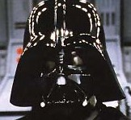
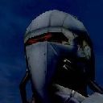
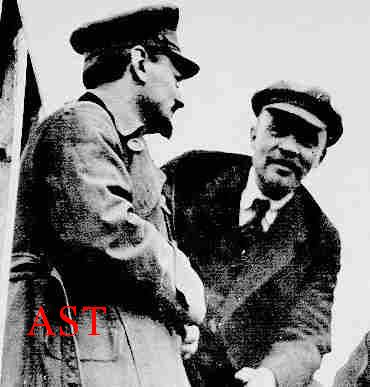

Forums galactiques > Assemblée Galactique : diplomatie officielle > L'onde Magnétique
Pages : 1 2
| Archimage Antonophix Respect diplomatique : 10  28/09 ETU 19:36 | Score : 0 Détails Mes troupes viennent d'arriver dans le systéme 0,
Un spectacle de désolation s'offre a moi, se systéme ressemble plus a un champ d'astéroide qu'a un ensemble de planete, partou des debrit de vaisseau flotte au gré des ondes, C'est horrible, Mais j ai une exelent nouvelle a vous annoncé, l Aigle ne posséde presque plus aucune troupe dans ce systéme seul, Keeh est encor entouré de troupe marqué du symbole de la mort, Yik expliqué vous cette onde ne peut venir que du peuple de la contrebande!!! | ||
| Spectror Respect diplomatique : 0  28/09 ETU 19:37 | Score : 0 Détails Ses techniciens d'élite ont travaillés sans relâche sur Newdeun, je ne sais pas si cela est lié, mais j'y crois fortement.
| ||
| juju_01 Respect diplomatique : 34  28/09 ETU 19:45  | Score : 0 Détails Je n'ai qu'une chose a dire: allons explorer cette contrée destinataire de l'onde!
Vers l'infini est au dela ! juju_01 | ||
| Yik le contrebandier Respect diplomatique : 0  28/09 ETU 19:46 | Score : 0 Détails ---------------------------------------------------
Alors que les commandants étaient encore abasourdis par l?onde électromagnétique qui s?était échappée des sous-sols de la capitale de Newdeun, les immenses portes de l?Assemblée s?ouvrirent pour laisser place à Yik, entouré de sa garde d?élite. Malgré les traits tirés de celui-ci, et les cicatrices de ses compagnons, un sourire carnassier était visible sur son visage fin. Les caméras automatiques se braquèrent sur lui, et il prit la parole. -------------------------------------------------------- « Commandantes, commandants, Tout d`abord, sachez que la disparition des flottes dans le systeme 0 n`est pas de notre fait, mais de celui de l`Aigle qui a declenche des bombardements massifs inegales jusqu`a aujourd`hui. Mon propre contingent a beaucoup souffert. Mais l`heure n`est pas a pleurer nos troupes. L?heure est enfin venue de vous faire certaines révélations. Mon discours sera long, mais vous apportera de nombreuses vérités, aussi je vous conseille de m?écouter attentivement. Vous avez perdu le système 0, mais la lutte acharnée nous a permis de gagner assez de temps pour que nous puissions déclencher cette anomalie, nous donnant accès à l?un des systèmes originaires de l?Aigle. Nous avons dû vous mentir sur un certain nombre de points, afin de tendre un piège à celui que l?on appelle l?Aigle. Aujourd?hui cette stratégie est couronnée de succès, puisque nous avons accès à ce système, de la plus haute importance. C?est notre quête ancestrale qui est en passe d?être terminée. Mais pour que vous me compreniez, il est temps de vous raconter une histoire qui n?est pas anodine. Cette histoire remonte aux origines de l?Humanité. Mais il s?agit en réalité aussi bien de l?Histoire de mon peuple, que de l?histoire de l?Aigle, et c?est aussi votre histoire, votre présent, et conditionne votre avenir à tous. Cette Histoire, nous la transmettons de génération en génération au sein du peuple des Héritiers de l?Histoire. Vous êtes-vous jamais demandé pourquoi les trois capitales Keeh, Leem et Newdeun sont regroupées dans le même système, ce fameux système 0 qui a été tant de fois le théâtre de moments sombres de l?Histoire galactique ? En réalité, le monde d?origine de l?humanité, la Terre, était située ici même, avant qu?elle ne devienne un caillou inutilisable devenu absent des cartes géostratégiques. Lorsque les hommes préhistoriques ont dû abandonner la Terre, ils ont colonisé en priorité les systèmes les plus proches. L?entité que nos anthropologues nomment « L?Etat Nord-Américain » a installé sa première colonie sur Keeh, « L?Unité Européenne » sur Newdeun, et « L?Empire SinoJapindien » sur Leem. Nous ne sommes pas certains que ces planètes ont toujours porté ce nom. Toujours est-il que les sinojapindiens ont dès le départ choisi la voie du commerce interplanétaire. Pendant une temps très long, leur connaissance de l?univers s?est étendue. Ils se sont même pendant plus de 200 ans spécialisés dans la vente de colonies clé-en-main. Vous l?avez compris, amis guildéens, je parle de vos ancêtres. De nombreuses colonies issues de la Fédération nordaméricaine ont profité de leur avance technologique dans le domaine militaire et spatial pour s?imposer sur les planètes originellement les plus fournies en ressources, essaimant la galaxie. Quand à l?Unité Européenne, elle a choisi le développement technologique dans les domaines de la productivité, préférant privilégier la qualité et la densité, plutôt que la quantité de colonies. Que l?on se comprenne bien, ces trois entités installées sur les trois capitales ont simplement servi de point de départ à de multiples colonisations au moyen de mission cryogénées. Ces colonisation se sont faites dans tous les sens, les mondes d?arrivée ne gardant souvent aucun lien avec l?une des capitales lointaines. Rappelez-vous qu?à cette époque les déplacements permis par l?Hyperfusion n?existaient pas. C?est pourquoi de nombreuses planètes ont aujourd?hui oublié quelle est l?origine de leur première colonie. Et cela explique qu?aucun écrit n?a survécu à cette période d?expansion, mis à part au sein de mon peuple. Pour autant, pendant toute l?interhistoire, l?autarcie n?a pas été complète, en partie en raison de l?existence d?un commerce planétaire. En l?an -12 E.T.U., le commerce était même florissant, en raison de nouvelles techniques de déplacement, ancêtres techniques de notre hyperfusion. Les commerçants, pour la plupart issus de l?union sinojapindienne, avaient alors décidé de se grouper en un Syndicat des Marchands Indépendants (SMI), lors d?une réunion sur Leem. Leur idée : favoriser une reprise contrôlée des échanges, tout en maximisant les profits par la centralisation des informations commerciales et des prix. Bref, créer un cartel monopolistique qui subviendrait cependant à de nombreux besoins dans la galaxie. Mais une minorité de ces nomades de l?espace s?opposa fermement à cette idée. Pour eux, ceci risquait de mener le monde à sa perte. L?humanité n?était pas assez mature pour ça, et les bénéfices ne justifiaient pas cette prise de risque. Aussi, en l?an 0 E.T.U., alors que l?Histoire ne retient que la convocation du Grand Congrès sur Leem, une partie de ces commerçants, qui furent appelés les Renégats, partirent dans leurs vaisseaux marchands d?élite pour une destination qu?ils gardaient secrète. Ils pensaient ainsi se mettre à l?abri de tout apocalypse humain qu?il prévoyaient. Hélas, 180 ans plus tard, leurs craintes se révélèrent rapidement fondées. Loin de favoriser la paix et le commerce, la galactisation des échanges avait eu pour conséquence l?émergence du conflit entre l?Alliance Eternelle et la Fédération Dirigiste, comme vous le savez tous. Le Syndicat des Marchands Indépendants se réunit sur Leem en session extraordinaire pour décider des réformes d?adaptation. A une large majorité, le vote se fit en faveur de la création de la Guilde Commissionnaire, qui devait survivre au moyen de la spéculation sur le prix des armes à vendre aux deux factions opposées. Mais là encore, cette décision ne fit pas l?unanimité. Beaucoup savaient que ceci provoquerait une Guerre qui emmènerait la Guilde elle-même à sa perte. Un groupe d?un millier de commerçants, décida en secret de faire sécession, de vivre dans l?ombre de la contrebande, et de lutter dans l?ombre contre la Guilde qui allait spéculer sur la guerre. Ces « héritiers de l?Histoire » ont alors juré d?organiser tous les contrebandiers en une organisation efficace, pour pouvoir contrôler le prix des armes. Notre quête, depuis la première heure, est de retrouver les systèmes refuges des Renégats. En deux décennies, nous avons rassemblé des données conséquentes sur l?Histoire, et sur la période d?InterHistoire. Ces données-même que je viens de vous livrer. Notre première action fut de s?opposer il y a tout juste 20 ans, à la veille de la Guerre, au renversement d?Attilane sur Keeh par un jeune commandant dont personne ne savait rien. Son nom : «Drakaan ». Ce coup d?Etat avorté était supporté par Ghuo et la Guilde, qui y avait trouvé un intérêt commercial incroyable. En effet, Drakaan n?était pas aussi cruel qu?Attilane, mais largement plus froid et intelligent. Il avait le soutien d?une bonne partie des commandants de la Fédération. Sous son commandement,le second apocalypse n?aurait probablement jamais eu lieu, et la Guerre ne se serait pas arrêtée à ses premiers escarmouches. Mais nos Frères Héritiers avaient décidé qu?il ne prendrait jamais le pouvoir. Ma première action secrète en temps que « Frère » des Héritiers, a été de contribuer à son arrestation par la police politique d?Attilane, suite à une manipulation éhontée mais efficace. Condamné pour haute-trahison, Dakaan fut enfermé dans les geôles de Keeh quelques jours avant l?Apocalypse. Nul ne sait ce qu?il est devenu lorsque Fregger a pris possession de Keeh. "Drakaan", ce jeune et ambitieux commandant, vous l?avez compris, n?était autre que celui que l?on nomme aujourd?hui « Aigle Sombre ». Lorsque la première anomalie magnétique, déclenchée par hasard par un lieutenant de Fregger, s?est échappée de Leem, en direction des systèmes lointains, nous avons repris espoir en notre quête. Nous avons compris que ce mécanisme avait été installé ici pour permettre aux Renégats de revenir un jour dans leurs systèmes d?origine. Mais nos efforts pour inverser le processus se sont révélés vains. Nous attendions avec impatience l?occasion de fouiller Newdeun à la recherche d?un tel mécanisme. Et les récents évènements, que nous avons certes bouleversés par de nombreuses rumeurs, nous ont donné l?occasion de parvenir à nos fins. Aussi, vous l?avez maintenant compris, la sécurité de l?Assemblée n?était en réalité qu?un prétexte pour permettre à mes techniciens de partir à la recherche de l?émetteur magnétique de Newdeun. Après des jours de travail, nous avons enfin réussi à l?activer. Et l?anomalie magnétique nous ouvre les portes de l?un des systèmes de l?Aigle. En effet, tout nous pousse à croire que Drakaan a réussi à s?évader de Keeh, et nous a devancé en direction des systèmes lointains grâce à la première onde magnétique. Sa puissance actuelle nous fait craindre le pire pour le peuple des Renégats. Comment l?Aigle a-t-il réussi à prendre le pouvoir sur place ? Aujourd?hui est un grand jour pour mes frères les héritiers. Comme garanti précédemment, nous nous retirons immédiatement de ce combat dans le système 0, qui ne nous concerne plus. En remerciement pour votre aide, nous ne modifierons pas nos tarifs de contrebande, alors que la logique commerciale nous pousserait à profiter de la situation. De plus, une aide logistique peut vous être apportée si vous éprouvez des difficultés. Nous déclarons le système de l?Aigle propriété historique des héritiers, et allons tenter de libérer les renégats, s?ils vivent encore, du joug de l?Aigle. Il est certainement tentant pour vous de vouloir le poursuivre et vous emparer des richesses, technologies avancées, et armes lourdes que semblent avoir développés les Renégats. Mais nous vous prierons de ne pas envahir ces planètes qui sont notre héritage, et le but de notre quête. Le peuple des renégats vit sous le joug de l?Aigle, nous allons l?en libérer. Commandants de l`Alliance, commandant Archimage, commandant Representissime, nous décollons de Newdeun dans une heure. Vous pouvez reprendre le contrôle de la situation. Aqui doit se faire le transfert de souverainete ? De nombreux bunkers ont été construits par mes soins sur Newdeun. Je vous souhaite bon courage dans votre lutte pour la liberté dans le système 0." ---------------------------------------------------------- Yik sortit de l?Assemblée. Les commandants comprenaient à présent qu?ils avaient été instrumentalisés par les contrebandiers, même si ceux-ci n?avaient jamais prétendu à la charité. Certains étaient ravis de mieux comprendre les évènements, et continuaient a penser que les contrebandiers les avaient grandement aides dans la lutte. Certains étaient outragés, d?autres déçus, d?autres encore décidés à demander des comptes. Certains se demandaient comment libérer le système 0 sans l?aide des contrebandiers. Enfin, il y avait ceux qui souhaitaient comprendre comment l?Aigle, ou plutôt Drakkan allait réagir, et ceux qui étaient soulagés du retrait de Yik, laissant libre cours à leurs sombres desseins... Mais surtout il y avaient ceux qui, sombrant dans la panique, se preparaient a evacuer l`Assemblee avant qu`il ne soit trop tard. | ||
| Commandant Kerstan Respect diplomatique : 126  28/09 ETU 19:54 | Score : 0 Détails Voilà la transmission d'un de mes Commandants :
« Commandant, nous venons d'intercepter une anomalie électromagnétique, en provenance du système 0. Il semblerait que cette onde d'une fréquence que personne n'utilise de nos jours se dirige vers une zone lointaine de la galaxie. Je me permets de vous signaler l'ampleur incroyable de l'anomalie, qui dépasse de loin celle qui fait partie des légendes historiques qui se transmettent depuis l'époque Freggerienne. Je suppose que de nombreux autres commandants ont eux aussi intercepté cette anomalie. Tout ceci est sans doute lié avec les évènements actuels du système 0.... Mais... Attendez. C'est incroyable... L'accès hyperspatial au Système 250 vient d'être déverrouillé. Cette zone de la galaxie était pourtant classifiée comme entièrement inintéressante. Tout ceci est bien étonnant... » Avez-vous confirmation ? | ||
| Commandant Kerstan Respect diplomatique : 126 28/09 ETU 20:12 | Score : 0 Détails Le commandant Kerstan se leva et prit la parole :
"Honorable membres de l'Assemblée, Commandants Morcar, Archimage, Atlante, Snake et tous les autres résistants, Il est temps de reprendre ce qui nous appartient, certe nous sommes désormais seuls, mais notre ennemi devra se battre sur plusieurs front, ce qui lui posera problème et jouera sans doute en notre faveur. Prenons les armes, prenons ce qui nous revient de droit !" Il attendit point levé la réaction de ses collègues. | ||
| CLEMENT Respect diplomatique : 0  28/09 ETU 20:13 | Score : 0 Détails pardon mais que se passera t'il si vous perdez contre l'aigle sombre.
| ||
| rambo Respect diplomatique : -4 28/09 ETU 20:14 | Score : 0 Détails C'est le moment ou jamais de réagir! AUX ARMES!!!!
| ||
| Spectror Respect diplomatique : 0 28/09 ETU 20:14 | Score : 0 Détails C'est impossible, nous sommes organisés, nous sommes engagés, nous avons des ressources illimités, et nous ne nous arrêterons pas avant d'avoir sa tête sur un pieu.
| ||
| yable Respect diplomatique : 250  28/09 ETU 20:18 | Score : 0 Détails Disons que nous nous jeteront dans la bataille afin de l'exterminer une bonne fois pour toutes.
En ce qui concerne le transfert de souveraineté de Newdeun, il me semble que c'est au représentissime de l'obtenir, ainsi que le veut la tradition. Je demanderais donc à Yik de bien vouloir remettre cette planète à Morcar Baughlir si ce n'est déjà fait. Pour cela, je pense m'exprimer au nom de tout ceux qui ont su garder les valeurs originelles de L'Alliance. | ||
| Morcar Baughlir Respect diplomatique : 0  28/09 ETU 20:20 | Score : 0 Détails Un X-com se présentat de nouveau dans les deux grandes salles; Morcar Baughlir prît la parole :
"Nous ne sommes pas seuls, puisque Yik continuera sa lutte dans les systèmes de Aigle Sombre. Il peut bien évidement compter sur notre soutient pour débarrasser la galaxie du Tyran. Etant donné ce qu'il a fait pour nous, c'est la moindre des choses. La reprise du système zéro est désormais possible, puisque Drakaan n'est plus caché, et qu'il va avoir a lutter pour sa propre défense. Que les lâches cessent de nous importuner de leurs éternelles jérémiade, et que le vent de la justice et de la liberté souffle en tempête sur les troupes de Drakaan le Tyran. Il est temps de le chasser de cette galaxie !" Et le x-com prît fin | ||
| Archimage Antonophix Respect diplomatique : 10 28/09 ETU 20:26 | Score : 0 Détails Cher Yik,
La souveraineté de Newdeun revien au Représentissime en Chef de l Alliance, Morcar Baughlir, c'est lui même qui doit prendre place dans le palais de l Alliance, et nom moi. Je suis heureux d'avoir put aidé le peuple de la contrebande, ou plutot les Héritier de l Histoire. Quand Aigle Sombre, je viendrais dans ce systéme, sans attaqué mais pour voir se peuple mysterieux dont vous nous parlez. | ||
| Empereur Kryss Respect diplomatique : 1  28/09 ETU 20:27 | Score : 0 Détails Yik a demandé à ce que nul ne le suive dans le système 250. je réspècte sa volonté au nom de l'aide, même intéressée, qu'il nous a fourni.
sons but final est de libérer les Héritiers détenus par l'Aigle. et ceci passe par la destruction de l'aigle. alors je cropis que nous nous devons de nous battre contre l'aigle sans intervenir dans la lutte millénaire que mène yik. | ||
| Spectror Respect diplomatique : 0 28/09 ETU 20:27 | Score : 0 Détails Je continuerai à me battre dans le système 0.
| ||
| Seigneur_Bodet Respect diplomatique : 0  28/09 ETU 20:58 | Score : 0 Détails J'ai l'impression qu'il va y avoir du people dans ce new systeme...
| ||
| Salissian Respect diplomatique : 0  28/09 ETU 21:38 | Score : 0 Détails oui je crois ...
| ||
| Gorgomli Respect diplomatique : 0 28/09 ETU 21:52 | Score : 0 Détails Un jeune inconnu , le visage grave se leva et prit la parole:
"Permettez moi de me présenter briévement:Gorgomli , commandant de la fédération. Je suis probablement inconnu à la totalité d'entre vous , et peut etre que mon inexperience devrais m'inciter à me taire et'écouter tranquillement les grands de ce monde , mais quelques points me dérangent à propos de ce Yik... En effet si il nous a éclairé sur une partie de notre histoire communes , et sur les faits qui secouent la galaxie depuis peu , le vrai dessein des contrebandiers me semblent toujours très obscurs.Que se passera-t-il une fois qu'ils auront libérés les rénégats et repris ce qui , selon eux , et leur héritage ancestral? N'il y a-t-il pas une autre manipulation qui se cache derriere cela ? Je sais que je ne fais que spéculer , ce qui en ces temps difficiles risque de nous affaiblir , mais il me semble qu'il faut rester extrémement vigilant sur cette affaire. Voila commandants , j'espere que mon jeune age ne m'a pas fait commettre d'erreurs mais je fais appel a votre compréhension..." Sous les regards interrogateurs de l'assistance Gorgomli se rassit ,anxieux. | ||
| Boss Rroulliann Respect diplomatique : 0  28/09 ETU 22:11 | Score : 0 Détails Les deux émissaires de la planète Coteau prirent placent devant l'Assemblée des derniers commandants présents, soutenant le projecteur holographique personnel de leur maître. Le silence se fit lorsque apparut l'image du Commandant.
"Etrange retournement de situation.. Tout s'éclaire enfin, ou presque. Je ne serai pas particulièrement enclin à vous remercier, Yik le Contrebandier, mais plutôt ceux d'entre nous qui se battent actuellement dans le système 0 et protègent la galaxie malgré elle. Car vous nous avez manipulé depuis le début, et beaucoup ont été sacrifié sur l'autel de votre cause, aussi noble soit-elle. Nos Commandants d'Elite auraient-ils pu faire face à la menace sans votre intervention ? Nous ne le saurons sans doute jamais. Puisse la quête de votre peuple être menée à son terme, Héritier de l'histoire. Puisse votre intelligence et votre sagesse tous nous inspirer pour mener l'humanité vers des jours meilleurs. Car la lutte continue..." | ||
| dowee Respect diplomatique : 0 28/09 ETU 22:12 | Score : 0 Détails Le commandant Dowee se leva et approuva gorgomli.Il ajouta egalement:
" je ne suis donc pas le seul a me méfiait de yik. je pense que dans un futur proche nous aurons d'autres surprise."....... | ||
| Redsamourai Respect diplomatique : 0  29/09 ETU 05:30 | Score : 0 Détails Commandants Dowee, Gorgomli, et tous ceux qui partagent leurs doutes sans pour autant la manifester au grand jour a l Assemblee:
si vous n avez que peu l habitude de l Assemblee, nous tenons a reaffirmer que depuis la premiere minute nous sommes la seule entitite politique a mettre perpetuellement en doute les raisons affichees par les COntrebandiers. Nous vous invitons a prendre connaissance de nos precedents communiques suite aux declarations de l Aigle et de Yick pour en avoir confirmation. Cette fois encore, nous constatons, qu envers et contre tous, l UCI avait vu juste sur une bonne partie de ses analyses politiques. Nous nous joignons a votre ahurissement face a la facilite avec laquelle les commandants les plus en vue continuent de boire les paroles de Yick. Nous annoncons l envoi d un eclaireur dans le systeme 250, il ne represente aucune menace et est parti avant que nous ayons eu connaissance de l interdiction de penetration dans le secteur. La volonte des Contrebandiers de cacher a tout prix ce qui se passera dans ces systemes nous preoccupe d ailleurs au plus haut point. Les traitrises ne sont pas pres de s arreter. Pour le Soviet Supreme de l UCI, Redsamourai |
Pages : 1 2
Forums galactiques > Assemblée Galactique : diplomatie officielle > L'onde Magnétique